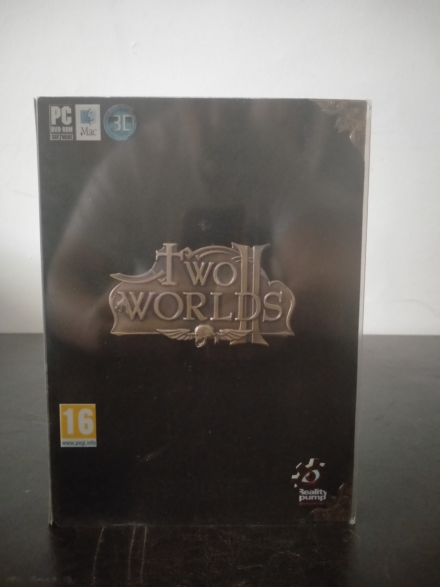

Ficha #000000
Two Worlds II: Game of the Year Edition
Two Worlds II: Game of the Year Edition reúne el juego de rol de mundo abierto desarrollado por Reality Pump Studios y la expansión Pirates of the Flying Fortress. Ambientado en Antaloor, combina exploración libre, combate en tiempo real, decisiones narrativas, multijugador y sistemas de personalización especialmente amplios, entre ellos la creación modular de hechizos DEMONS y la mejora de equipo mediante CRAFT. El título utiliza el motor GRACE, concebido para ofrecer escenarios extensos, iluminación dinámica y soporte de representación estereoscópica en 3D. Esta edición europea para PC y Mac incorpora el contenido ampliado de la expansión y constituye una publicación física representativa de la etapa final de las ediciones de rol para ordenador presentadas en caja de cartón con estuche y materiales impresos.
- Formato
- DVD Case
- Plataforma
- WinXP Windows Vista Win7 MacOs
- Género
- Rol Action RPG Mundo abierto Fantasía Compilación
- Serie
- Todos Big Box
- Desarrollador
- Reality Pump Studios
- Distribuidor
- TopWare Interactive
- EAN
- 4250230210403
Contenido de la edición
- Caja exterior de cartón Big Box
- Estuche DVD Case
- Manual de instrucciones
- Mapa desplegable
- DVD-ROM Two Worlds II: Game of the Year Edition
- DVD-ROM Bonus Disc
Preservación
- Protección
- Otro
- Formato recomendado
- ISO
- Jugable en virtualización
- Sí
Preservar ambos DVD-ROM mediante imágenes ISO verificadas y digitalizar el manual, el mapa y la caja. La edición exige activación por teléfono o Internet, por lo que también debe documentarse y conservarse cualquier número de serie o credencial asociada; la futura instalación puede depender de la disponibilidad del servicio de activación o de un procedimiento legítimo de activación sin conexión.